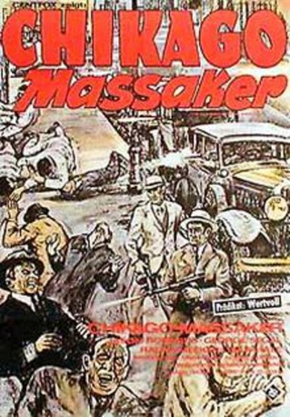
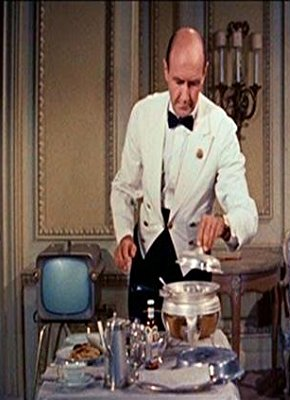
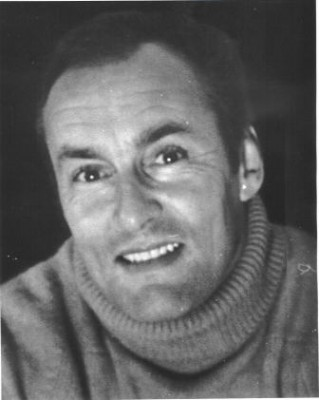

#7393 Chicago-Massaker
Alternativ: The St. Valentine's Day Massacre
 
 IMDB-Wertung: 6.7 / 10
IMDB-Wertung: 6.7 / 10  Metascore: 0
Metascore: 0 
Chicago, 1929: die Ära der Prohibition. In den Straßen toben blutige Machtkämpfe der Unterwelt. Es geht um illegale Alkohol-Geschäfte, Spielsalons und Bordelle. Die Justiz ist machtlos und die Polizei korrupt. Zwischen den rivalisierenden Banden Al Capones (Jason Robards) und Bugs Morans (Ralph Meeker) kommt es täglich zu Schießereien. Die Auseinandersetzungen kulminieren schließlich am Valentinstag. Vier Killer aus Capones Garde dringen in den Schlupfwinkel der gegnerischen Bande ein und erschießen sieben Männer. 24 Stunden später ist der Teufel los! Chicago erlebt den blutigsten Bandenkrieg in der amerikanischen Kriminalgeschichte...
Jahr: 1967
Dauer: 99 Minuten
FSK: 16
Land: USA Studio: Twentieth Century FoxTonspuren:
Untertitel: Deutsch,
Auflösung: 1080p (1920x816) Größe: 6707 MB
Genre: Drama, Krimi, Geschichte
Regisseur:  Roger Corman
Roger Corman
Drehbuch: Pierre Lesou
Soundtrack:
Darsteller:
 Jason Robards als Al Capone
Jason Robards als Al Capone George Segal als Peter Gusenberg
George Segal als Peter Gusenberg- Ralph Meeker als George Clarence 'Bugs' Moran
- Jean Hale als Myrtle
 Clint Ritchie als Jack McGurn
Clint Ritchie als Jack McGurn Frank Silvera als Nick Sorello
Frank Silvera als Nick Sorello- Joseph Campanella als Albert Wienshank
 Richard Bakalyan als John Scalise
Richard Bakalyan als John Scalise- David Canary als Frank Gusenberg
 Bruce Dern als Johnny May
Bruce Dern als Johnny May Harold J. Stone als Frank Nitti
Harold J. Stone als Frank Nitti- Kurt Kreuger als James Clark
- Paul Richards als Charles Fischetti
 Joe Turkel als Jake 'Greasy Thumb' Guzik
Joe Turkel als Jake 'Greasy Thumb' Guzik-  Milton Frome als Adam Heyer
 John Agar als Dion O'Bannion
John Agar als Dion O'Bannion Celia Lovsky als Josephine Schwimmer
Celia Lovsky als Josephine Schwimmer- Tom Reese als Ted Newberry
- Jan Merlin als Willie Marks
- Alexander D'Arcy als Joe Aiello
- Reed Hadley als Hymie Weiss
- Gus Trikonis als Rio
 Charles Dierkop als Salvanti
Charles Dierkop als Salvanti Alex Rocco als Diamond
Alex Rocco als Diamond Leo Gordon als Heitler
Leo Gordon als Heitler- Mary Grace Canfield als Mrs. Doody, Landlady , uncredited
- Russ Conway als Interrogator , uncredited
 George DeNormand als Clerk , uncredited
George DeNormand als Clerk , uncredited Paul Frees als Narrator , uncredited
Paul Frees als Narrator , uncredited James Gonzalez als Party Guest , uncredited
James Gonzalez als Party Guest , uncredited- Richard Krisher als Desk Clerk , uncredited
 Dick Miller als Gangster Dressed as a Cop , uncredited
Dick Miller als Gangster Dressed as a Cop , uncredited Jack Nicholson als Gino, Hit Man , uncredited
Jack Nicholson als Gino, Hit Man , uncredited-  Ron Nyman als Hood , uncredited
 Monty O'Grady als Party Guest , uncredited
Monty O'Grady als Party Guest , uncredited Leoda Richards als Party Guest , uncredited
Leoda Richards als Party Guest , uncredited Jeffrey Sayre als Party Guest , uncredited
Jeffrey Sayre als Party Guest , uncredited Joan Shawlee als Edna, Frank's Girlfriend , uncredited
Joan Shawlee als Edna, Frank's Girlfriend , uncredited Buck Taylor als Poolside Interviewer 2 , uncredited
Buck Taylor als Poolside Interviewer 2 , uncredited- Corinna Tsopei als Gangster Girl , uncredited
- Mickey Deems als Reinhold Schwimmer
- Tom Signorelli als Bobo Borotto
- Rico Cattani als Albert Anselmi
- Daniel Ades als Angelo Molina , uncredited
- Vincent Barbi als Witness , uncredited
- Laura Barry als Girl , uncredited
- Nick Borgani als Capone Board Member , uncredited
- Bob Brandon als Capone Board Member , uncredited
- Mushy Callahan als Hood , uncredited
- Albert Cavens als Reporter , uncredited
Datei: X:\1967\Chicago-Massaker (1967, FSK16, 1920x816).mkv seit 08.11.2017
Festplatte: HD 1900-1970
 Es gibt insgesamt 24 Filme in der Gruppe '1967'
Es gibt insgesamt 24 Filme in der Gruppe '1967'